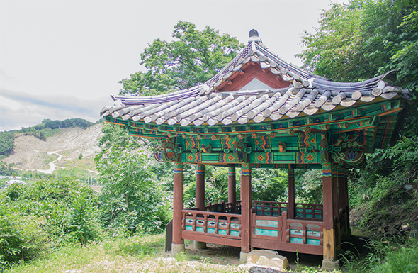

함벽정
| 주소 | 청주시 상당구 미원면 운교리 산 64 |
|---|---|
| 지정정보 | 청주시 향토유형유적 2015.04.17 |
| 시대 | 조선시대 |
함벽정(涵碧亭)은 조선시대에 건립된 정자로 청주시 상당구 문의면 대청호 인근에 자리하고 있다. 대청호가 조성되기 이전부터 이 일대의 빼어난 경관을 즐기기 위해 세워진 누정(樓亭) 건축물로, 주변의 수려한 자연경관과 어우러져 선비들의 풍류와 시문 창작 공간으로 활용되었다. '함벽(涵碧)'이라는 이름은 푸른 물과 산이 서로 어우러진다는 뜻으로 정자 주변의 경치를 잘 표현하고 있다. 현재는 대청호의 물안개와 함께 사계절 아름다운 풍광을 자랑하는 명소로 청주 시민들의 나들이 장소이자 역사 탐방 코스로 사랑받고 있으며, 청주시 향토유형유적으로 지정되어 지역의 건축·문화사적 가치를 인정받고 있다.
-
함벽정은 청주 시내에서 차로 약 30분 거리의 문의면에 위치합니다.
자가용 이용 시
내비게이션에 '함벽정' 또는 '청주시 상당구 문의면 문의리' 입력
청주 시내(상당구)에서 17번 국도 이용, 약 30분 소요
문의문화재단지 주차장 이용 후 도보 이동 가능
대중교통 이용 시
청주 시내버스 문의면 방면 노선 이용
'문의' 정류장 하차 후 도보 또는 택시 이용
배차 간격이 길므로 사전에 시간 확인 권장
참고 사항
문의문화재단지·청남대와 함께 당일 코스로 방문하기 좋음
대청호 드라이브 코스와 연계 추천 -
함벽정 인근 문의면 일대는 대청호와 함께 청주의 대표적인 자연·역사 관광지입니다.
문의문화재단지
주소: 충청북도 청주시 상당구 문의면 문의시내로 6
설명: 대청댐 건설로 수몰된 지역의 전통 가옥과 문화재를 이전·복원한 야외 문화공원입니다.
청남대
주소: 충청북도 청주시 상당구 문의면 청남대길 646
설명: 역대 대통령이 사용하던 별장으로, 대청호 풍경과 함께 역사·자연을 동시에 즐길 수 있습니다.
대청호 오백리길
주소: 충청북도 청주시 상당구 문의면 일대
설명: 대청호를 따라 이어지는 걷기 코스로 사계절 수려한 경관이 펼쳐집니다.
미동산수목원
주소: 충청북도 청주시 상당구 미원면 미동산수목원로 51
설명: 다양한 수종과 자연 생태를 관람할 수 있는 대규모 수목원입니다.
-
문의면 일대는 대청호 드라이브 코스와 함께 소박한 향토 음식점들이 있습니다.
문의 메기매운탕
주소: 충청북도 청주시 상당구 문의면 일대
설명: 대청호 인근 민물고기 요리 전문 식당. 메기·쏘가리 매운탕이 인기입니다.
문의 한우식당
주소: 충청북도 청주시 상당구 문의면 일대
설명: 청주 지역 한우를 사용한 구이와 국밥 메뉴의 향토 식당입니다.
문의 손두부
주소: 충청북도 청주시 상당구 문의면 일대
설명: 국산 콩으로 직접 만든 담백한 손두부 요리를 맛볼 수 있습니다.
-
문의면은 청주 도심에서 떨어져 있어 청주 시내 숙소를 베이스로 당일 방문을 권장합니다.
1. 부티크호텔 지 청주점
주소: 충청북도 청주시 상당구 상당로 55번길 40
특징: 청주 도심 위치. 문의면 방문 거점으로 적합.
가격대: 약 66,000원부터
2. 청주나무호텔
주소: 충청북도 청주시 상당구 상당로 81번길 36
특징: 상당구 위치로 문의면 이동 동선에 유리.
가격대: 약 63,000원부터
3. 호텔 야자 서문점
주소: 충청북도 청주시 상당구 서문로 89
특징: 가성비 좋은 도심 숙소. 대중교통 이용 편리.
가격대: 약 39,000원부터
* 위 가격은 2026년 기준이며 예약 시점에 따라 변동될 수 있습니다.